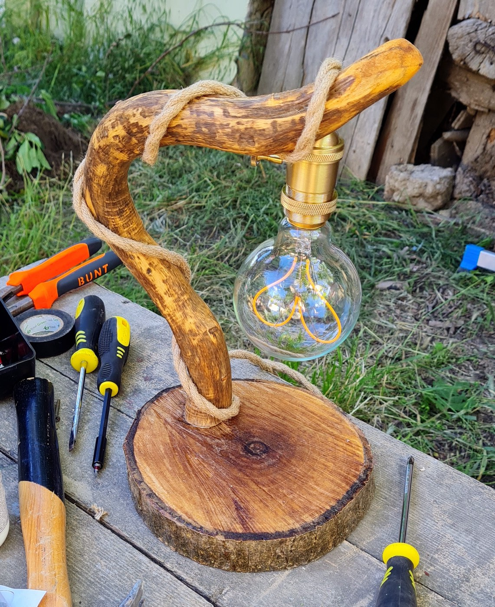
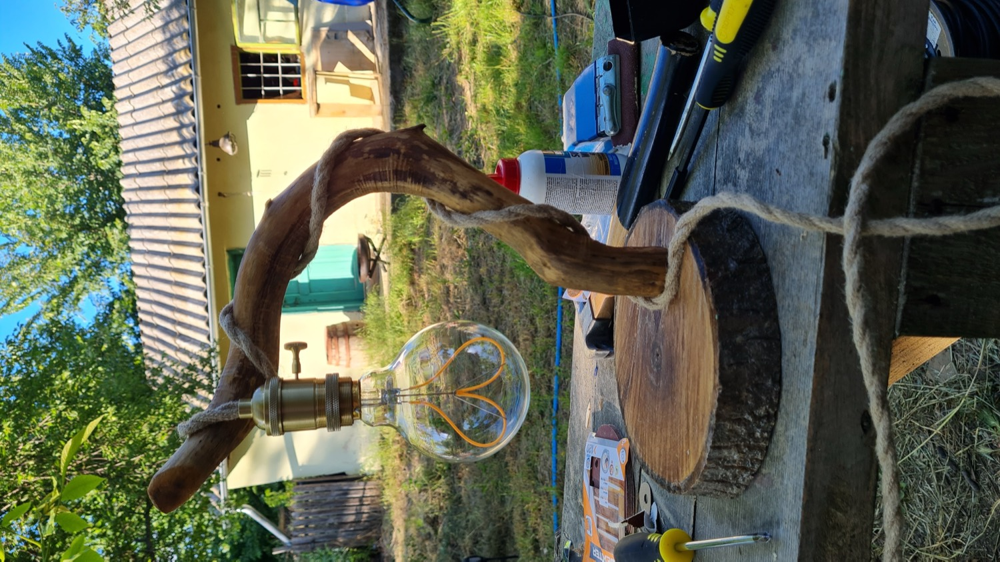

Drawing · to order
Light & Matter — handmade lighting, one of one
One branch.
One log.
One bulb.
Every lamp starts as something already finished: a branch the water bleached for a decade, a slice off a fallen walnut, now and then a piston or a headlamp bezel that stopped being useful in 1974. I dry it, cut it, wrap the flex in hemp rope, wire it to CE spec and give it a filament.
←→ to move through the studio

03 — The signature piece
The Arc, four times.
The same lamp on the bench it was built on, in the garden, on a shelf, and doing the only job it has. No two branches arc the same way, so no two Arcs stand the same way either.



04 — Specification
The Arc
The branch spent nine months drying in a shed before it was stable enough to trust. It sits in a blind mortise cut into the log slice — no bracket, no visible screw. The rope is not decoration: it carries the flex from socket to base, and it is what you take hold of when you move the lamp.
- Height
- 420–480 mm · base Ø 200–240 mm
- Arm
- Weathered hardwood branch, cured 9 months, oiled
- Base
- Slice off a fallen trunk, bark left on, felt-footed
- Socket
- Brass E27, knurled shell, key switch on the socket
- Bulb
- 4 W filament LED · 2700 K · dimmable · included
- Cord
- 2 m black braided flex in hemp rope, inline switch, CE
- Weight
- 2.1–2.8 kg
- Price
- €240–290 — depends on the branch, one of one

07 — The workshop
One bench,
one pair of hands.
The bench is outside, under a walnut, and it stays there until November. That is most of why these lamps look the way they do: the wood is found within a morning's walk of where it gets cut, and the first time a finished lamp is switched on, it is switched on in the yard.
I don't make series. Two lamps off the same tree will still be two different lamps, and if you ask me for a matching pair I'll tell you honestly which one to take. What you get is a signed piece, a written note of where every part of it came from, and someone who will rewire it for you in ten years.
- Working since
- 2019
- Pieces a year
- ~30
- Identical pieces made
- 0
- Lead time on a commission
- 3–5 weeks
- Electrical standard
- CE · 230 V · E27
- Ships
- EU-wide, crated
- Repairs & rewiring
- Free, for life